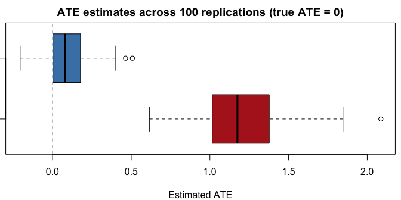

Forest Kernel Energy Balancing for Causal Inference
forestBalance estimates average treatment effects (ATE) by combining multivariate random forests with kernel energy balancing. A joint forest model of covariates, treatment, and outcome defines a proximity kernel that characterizes the confounding structure and emphasizes similarity of observations in terms of confounding. Distributional balancing weights are then obtained via a closed-form kernel energy distance solution. By construction, these balancing weights aim to balance the joint distribution of confounders specifically.
The method is described in:
De, S. and Huling, J.D. (2025). Data adaptive covariate balancing for causal effect estimation for high dimensional data. arXiv:2512.18069.
Quick start
# library(forestBalance)
# Simulate observational data with nonlinear confounding (true ATE = 0)
set.seed(123)
dat <- simulate_data(n = 500, p = 10, ate = 0)
# Estimate ATE with forest kernel energy balancing
fit <- forest_balance(dat$X, dat$A, dat$Y)
fit
#> Forest Kernel Energy Balancing
#> --------------------------------------------------
#> n = 500 (n_treated = 173, n_control = 327)
#> Trees: 1000
#> Solver: direct
#> ATE estimate: 0.0455
#> ESS: treated = 105/173 (61%) control = 232/327 (71%)
#> --------------------------------------------------
#> Use summary() for covariate balance details.How it works
The method proceeds in three steps:
Joint forest model: A
grf::multi_regression_forestis fit on covariates with the bivariate response . Because the forest splits on both treatment and outcome, the resulting tree structure captures confounding relationships.Proximity kernel: The kernel matrix is defined as the proportion of trees where observations and share a leaf node. This is computed efficiently via a single sparse matrix cross-product.
Kernel energy balancing: Balancing weights are obtained in closed form by solving a linear system derived from the kernel energy distance objective. The weights make the treated and control distributions similar with respect to the forest-defined similarity measure.
Detailed example
Simulating data
simulate_data() generates observational data with nonlinear confounding through a Beta density link:
Fitting the model
fit <- forest_balance(dat$X, dat$A, dat$Y, num.trees = 1000)Print and summary
print() gives a concise overview:
fit
#> Forest Kernel Energy Balancing
#> --------------------------------------------------
#> n = 800 (n_treated = 275, n_control = 525)
#> Trees: 1000
#> Solver: direct
#> ATE estimate: 0.0388
#> ESS: treated = 191/275 (70%) control = 394/525 (75%)
#> --------------------------------------------------
#> Use summary() for covariate balance details.summary() provides a full covariate balance comparison (unweighted vs weighted) with flagged imbalances:
summary(fit)
#> Forest Kernel Energy Balancing
#> ============================================================
#> n = 800 (n_treated = 275, n_control = 525)
#> Trees: 1000
#> Kernel density: 29.0% nonzero
#>
#> ATE estimate: 0.0388
#> ============================================================
#>
#> Covariate Balance (|SMD|)
#> ------------------------------------------------------------
#> Covariate Unweighted Weighted
#> ---------- ------------ ------------
#> X1 0.1668 * 0.0220
#> X2 0.2956 * 0.0086
#> X3 0.0277 0.0148
#> X4 0.1102 * 0.0242
#> X5 0.0430 0.0210
#> X6 0.0189 0.0055
#> X7 0.0945 0.0258
#> X8 0.0733 0.0033
#> X9 0.0332 0.0284
#> X10 0.0734 0.0055
#> ---------- ------------ ------------
#> Max |SMD| 0.2956 0.0284
#> (* indicates |SMD| > 0.10)
#>
#> Effective Sample Size
#> ------------------------------------------------------------
#> Treated: 191 / 275 (70%)
#> Control: 394 / 525 (75%)
#>
#> Energy Distance
#> ------------------------------------------------------------
#> Unweighted: 0.0486
#> Weighted: 0.0144
#> ============================================================Balance on nonlinear transformations
Since confounding operates through nonlinear functions of and , we can check balance on transformations of the covariates:
X <- dat$X
X.nl <- cbind(
X[,1]^2, X[,2]^2, X[,5]^2,
X[,1] * X[,2], X[,1] * X[,5],
dbeta(X[,1], 2, 4), dbeta(X[,5], 2, 4)
)
colnames(X.nl) <- c("X1^2", "X2^2", "X5^2", "X1*X2", "X1*X5",
"Beta(X1)", "Beta(X5)")
summary(fit, X.trans = X.nl)
#> Forest Kernel Energy Balancing
#> ============================================================
#> n = 800 (n_treated = 275, n_control = 525)
#> Trees: 1000
#> Kernel density: 29.0% nonzero
#>
#> ATE estimate: 0.0388
#> ============================================================
#>
#> Covariate Balance (|SMD|)
#> ------------------------------------------------------------
#> Covariate Unweighted Weighted
#> ---------- ------------ ------------
#> X1 0.1668 * 0.0220
#> X2 0.2956 * 0.0086
#> X3 0.0277 0.0148
#> X4 0.1102 * 0.0242
#> X5 0.0430 0.0210
#> X6 0.0189 0.0055
#> X7 0.0945 0.0258
#> X8 0.0733 0.0033
#> X9 0.0332 0.0284
#> X10 0.0734 0.0055
#> ---------- ------------ ------------
#> Max |SMD| 0.2956 0.0284
#> (* indicates |SMD| > 0.10)
#>
#> Transformed Covariate Balance (|SMD|)
#> ------------------------------------------------------------
#> Transform Unweighted Weighted
#> ---------- ------------ ------------
#> X1^2 0.2904 * 0.0259
#> X2^2 0.0941 0.0322
#> X5^2 0.0841 0.0694
#> X1*X2 0.1303 * 0.0144
#> X1*X5 0.0573 0.0582
#> Beta(X1) 0.6847 * 0.0347
#> Beta(X5) 0.0289 0.0138
#> ---------- ------------ ------------
#> Max |SMD| 0.6847 0.0694
#>
#> Effective Sample Size
#> ------------------------------------------------------------
#> Treated: 191 / 275 (70%)
#> Control: 394 / 525 (75%)
#>
#> Energy Distance
#> ------------------------------------------------------------
#> Unweighted: 0.0486
#> Weighted: 0.0144
#> ============================================================Standalone balance diagnostics
compute_balance() can be used independently with any set of weights:
# Inverse propensity weights (using true propensity scores)
ipw <- ifelse(dat$A == 1, 1 / dat$propensity, 1 / (1 - dat$propensity))
bal_forest <- compute_balance(dat$X, dat$A, fit$weights)
bal_ipw <- compute_balance(dat$X, dat$A, ipw)
c("Forest balance" = round(bal_forest$max_smd, 4),
"IPW" = round(bal_ipw$max_smd, 4))
#> Forest balance IPW
#> 0.0284 0.2508Lower-level interface
For more control, the pipeline can be run step by step:
library(grf)
# 1. Fit the joint forest
forest <- multi_regression_forest(dat$X, scale(cbind(dat$A, dat$Y)),
num.trees = 500)
# 2. Extract leaf node matrix and build kernel
leaf_mat <- get_leaf_node_matrix(forest, dat$X)
K <- leaf_node_kernel(leaf_mat)
c("observations" = nrow(leaf_mat), "trees" = ncol(leaf_mat))
#> observations trees
#> 800 500
c("kernel % nonzero" = round(100 * length(K@x) / prod(dim(K)), 1))
#> kernel % nonzero
#> 24.5
# 3. Compute balancing weights
bal <- kernel_balance(dat$A, K)
ate <- weighted.mean(dat$Y[dat$A == 1], bal$weights[dat$A == 1]) -
weighted.mean(dat$Y[dat$A == 0], bal$weights[dat$A == 0])
c("ATE estimate" = round(ate, 4))
#> ATE estimate
#> 0.1455Simulation study
A small simulation comparing the forest balance estimator against the naive (unadjusted) difference in means:
set.seed(1)
nreps <- 100
results <- matrix(NA, nreps, 2, dimnames = list(NULL, c("Naive", "Forest")))
for (r in seq_len(nreps)) {
dat <- simulate_data(n = 500, p = 10, ate = 0)
fit <- forest_balance(dat$X, dat$A, dat$Y, num.trees = 500)
results[r, "Naive"] <- mean(dat$Y[dat$A == 1]) - mean(dat$Y[dat$A == 0])
results[r, "Forest"] <- fit$ate
}| Method | Bias | SD | RMSE |
|---|---|---|---|
| Naive | 1.2055 | 0.2983 | 1.2419 |
| Forest | 0.0932 | 0.1428 | 0.1705 |

Key functions
| Function | Description |
|---|---|
forest_balance() |
High-level: fit forest, build kernel, compute weights, return ATE |
simulate_data() |
Simulate observational data with nonlinear confounding |
compute_balance() |
Covariate balance diagnostics (SMD, ESS, energy distance) |
get_leaf_node_matrix() |
Fast vectorized leaf node extraction from grf forests |
leaf_node_kernel() |
Sparse proximity kernel from leaf node matrix |
forest_kernel() |
Convenience: forest object to kernel in one call |
kernel_balance() |
Closed-form kernel energy balancing weights |